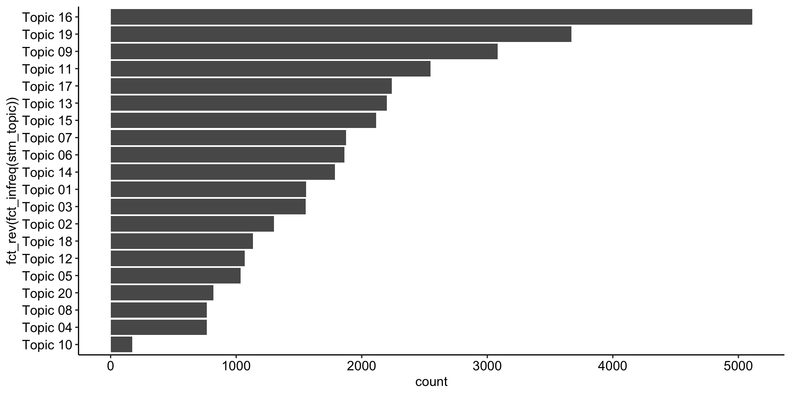

| Sitzung | Datum | Thema (synchron) | Übung (asynchron) | Dozent:in |
|---|---|---|---|---|
1 |
18.04.2024 |
Einführung & Überblick |
AM & CA |
|
📚 |
Teil 1: Systematic Review |
|||
2 |
25.04.2024 |
Einführung in Systematic Reviews I |
R-Einführung |
AM |
3 |
02.05.2024 |
Einführung in Systematic Reviews II |
R-Einführung |
AM |
09.05.2024 |
🏖️ Feiertag |
R-Einführung |
||
4 |
16.05.2024 |
Automatisierung von SRs & KI-Tools |
R-Einführung |
AM |
23.05.2024 |
🍻 WiSo-Projekt-Woche |
R-Einführung |
||
5 |
04.06.2024 |
🍕 Gastvortrag: Prof. Dr. Emese Domahidi |
R-Einführung |
ED |
6 |
06.06.2024 |
Automatisierung von SRs & KI-Tools |
R-Einführung |
AM |
💻 |
Teil 2: Text as Data & Unsupervised Machine Learning |
|||
7 |
13.06.2024 |
Introduction to Text as Data |
zur Sitzung |
CA |
8 |
20.06.2024 |
Text processing |
zur Sitzung |
CA |
9 |
27.06.2024 |
Unsupervised Machine Learning I |
zur Sitzung |
CA |
10 |
04.07.2024 |
Unsupervised Machine Learning II |
zur Sitzung |
CA & AM |
11 |
11.07.2024 |
Recap & Ausblick |
zur Sitzung |
CA & AM |
12 |
18.07.2024 |
🏁 Semesterabschluss |
zur Sitzung |
CA & AM |
Unsupervised Machine Learning (II)
Session 10
04.07.2024
Seminarplan
Agenda
Topic Modeling in R
Schritt für Schritt, von der Schätzung bis zur Validierung
Was bisher geschah …
Kurze Wiederholung der wichtigsten Inhalte
Ihr solltet in der Lage sein, die folgenden Fragen zu beantworten:
- Was verstehen wir unter Topic Modeling?
- Wofür wird Topic Modeling eingesetzt?
- Welche Schritte sind notwendig, um Topic Modeling in R umzusetzen?
Heutige Fokus liegt auf Detailfragen:
- Wie kann ich mein Themenmodell validieren?
- Wie finde ich die optimale Anzahl von Themen?
Die (bisherige) Transformation der Daten
Von der Subsample bis zum (neuen) Modell: Daten
# Create subsample
review_subsample <- review_works %>%
# Create additional factor variables
mutate(
publication_year_fct = as.factor(publication_year),
type_fct = as.factor(type)
) %>%
# Eingrenzung: Sprache und Typ
filter(language == "en") %>%
filter(type == "article") %>%
# Datentranformation
unnest(topics, names_sep = "_") %>%
filter(topics_name == "field") %>%
filter(topics_i == "1") %>%
# Eingrenzung: Forschungsfeldes
filter(
topics_display_name == "Social Sciences"|
topics_display_name == "Psychology"
) %>%
mutate(
field = as.factor(topics_display_name)
) %>%
# Eingrenzung: Keine Einträge ohne Abstract
filter(!is.na(ab))Rows: 36,680
Columns: 46
$ id <chr> "https://openalex.org/W4293003987", "https…
$ title <chr> "The WHO-5 Well-Being Index: A Systematic …
$ display_name <chr> "The WHO-5 Well-Being Index: A Systematic …
$ author <list> [<data.frame[4 x 12]>], [<data.frame[2 x …
$ ab <chr> "The 5-item World Health Organization Well…
$ publication_date <chr> "2015-01-01", "2017-08-28", "2014-01-01", …
$ relevance_score <dbl> 938.7603, 752.3500, 591.2553, 576.1210, 56…
$ so <chr> "Psychotherapy and psychosomatics", "Journ…
$ so_id <chr> "https://openalex.org/S184803288", "https:…
$ host_organization <chr> "Karger Publishers", "SAGE Publishing", NA…
$ issn_l <chr> "0033-3190", "0739-456X", NA, "2214-7829",…
$ url <chr> "https://doi.org/10.1159/000376585", "http…
$ pdf_url <chr> "https://www.karger.com/Article/Pdf/376585…
$ license <chr> "cc-by-nc", NA, NA, "cc-by", NA, NA, "cc-b…
$ version <chr> "publishedVersion", NA, "publishedVersion"…
$ first_page <chr> "167", "93", NA, "89", "55", "2150", "e356…
$ last_page <chr> "176", "112", NA, "106", "64", "2159", "e3…
$ volume <chr> "84", "39", NA, "6", "277", "32", "2", "24…
$ issue <chr> "3", "1", NA, NA, NA, "19", "8", NA, "9", …
$ is_oa <lgl> TRUE, FALSE, TRUE, TRUE, TRUE, FALSE, TRUE…
$ is_oa_anywhere <lgl> TRUE, TRUE, TRUE, TRUE, TRUE, FALSE, TRUE,…
$ oa_status <chr> "hybrid", "green", "bronze", "gold", "bron…
$ oa_url <chr> "https://www.karger.com/Article/Pdf/376585…
$ any_repository_has_fulltext <lgl> FALSE, TRUE, TRUE, TRUE, TRUE, FALSE, TRUE…
$ language <chr> "en", "en", "en", "en", "en", "en", "en", …
$ grants <list> NA, NA, NA, <"https://openalex.org/F43203…
$ cited_by_count <int> 2657, 1375, 2568, 803, 3664, 1553, 2895, 9…
$ counts_by_year <list> [<data.frame[11 x 2]>], [<data.frame[7 x …
$ publication_year <int> 2015, 2017, 2014, 2016, 2020, 2014, 2017, …
$ cited_by_api_url <chr> "https://api.openalex.org/works?filter=cit…
$ ids <list> <"https://openalex.org/W4293003987", "htt…
$ doi <chr> "https://doi.org/10.1159/000376585", "http…
$ type <chr> "article", "article", "article", "article"…
$ referenced_works <list> <"https://openalex.org/W1492518593", "htt…
$ related_works <list> <"https://openalex.org/W3020194755", "htt…
$ is_paratext <lgl> FALSE, FALSE, FALSE, FALSE, FALSE, FALSE, …
$ is_retracted <lgl> FALSE, FALSE, FALSE, FALSE, FALSE, FALSE, …
$ concepts <list> [<data.frame[7 x 5]>], [<data.frame[18 x …
$ topics_i <int> 1, 1, 1, 1, 1, 1, 1, 1, 1, 1, 1, 1, 1, 1, …
$ topics_score <dbl> 0.9926, 0.9050, 0.9995, 0.9987, 0.9999, 1.…
$ topics_name <chr> "field", "field", "field", "field", "field…
$ topics_id <chr> "https://openalex.org/fields/32", "https:/…
$ topics_display_name <chr> "Psychology", "Social Sciences", "Psycholo…
$ publication_year_fct <fct> 2015, 2017, 2014, 2016, 2020, 2014, 2017, …
$ type_fct <fct> article, article, article, article, articl…
$ field <fct> Psychology, Social Sciences, Psychology, P…Die (bisherige) Transformation der Daten
Von der Subsample bis zum (neuen) Modell: Document-Term-Matrix
# Create corpus
quanteda_corpus <- review_subsample %>%
quanteda::corpus(
docid_field = "id",
text_field = "ab"
)
# Tokenize
quanteda_token <- quanteda_corpus %>%
quanteda::tokens(
remove_punct = TRUE,
remove_symbols = TRUE,
remove_numbers = TRUE,
remove_url = TRUE,
) %>%
quanteda::tokens_tolower() %>%
quanteda::tokens_remove(
pattern = stopwords("en")
)
# Convert to Document-Feature-Matrix (DFM)
quanteda_dfm <- quanteda_token %>%
quanteda::dfm()
# Pruning
quanteda_dfm_trim <- quanteda_dfm %>%
dfm_trim(
min_docfreq = 10/nrow(review_subsample),
max_docfreq = 0.99,
docfreq_type = "prop")
# Convert for stm topic modeling
quanteda_stm <- quanteda_dfm_trim %>%
convert(to = "stm")Die (bisherige) Transformation der Daten
Von der Subsample bis zum (neuen) Modell: STM
Breaking down the model
Erweiterte Modellauswertung: Beta-Matrix
# A tibble: 286,440 × 3
topic term beta
<int> <chr> <dbl>
1 1 #x0d 6.83e-44
2 2 #x0d 2.37e-30
3 3 #x0d 3.35e-45
4 4 #x0d 7.24e- 3
5 5 #x0d 1.45e-23
6 6 #x0d 5.23e-20
7 7 #x0d 2.70e-12
8 8 #x0d 3.32e-39
9 9 #x0d 8.78e- 4
10 10 #x0d 2.58e-12
# ℹ 286,430 more rowsTop Begriffe nach Thema
Erweiterte Modellauswertung: Beta-Matrix
# Create top terms
top_terms <- td_beta %>%
arrange(beta) %>%
group_by(topic) %>%
top_n(7, beta) %>%
arrange(-beta) %>%
select(topic, term) %>%
summarise(terms = list(term)) %>%
mutate(terms = map(terms, paste, collapse = ", ")) %>%
unnest(cols = c(terms))
# Output
top_terms %>%
head(15)# A tibble: 15 × 2
topic terms
<int> <chr>
1 1 sleep, studies, eating, cognitive, weight, associated, duration
2 2 health, women, gender, cultural, barriers, men, countries
3 3 treatment, disorders, symptoms, disorder, depression, anxiety, therapy
4 4 patients, cancer, nurses, patient, music, nursing, pain
5 5 literature, university, author, gt, lt, et, al
6 6 prevalence, covid-19, suicide, pandemic, studies, among, risk
7 7 articles, review, study, systematic, results, search, science
8 8 physical, activity, disabilities, exercise, cognitive, adults, body
9 9 learning, education, students, educational, skills, teachers, teaching
10 10 de, la, y, en, los, 的, el
11 11 work, study, development, can, public, management, factors
12 12 violence, sexual, use, abuse, risk, youth, h3
13 13 health, mental, care, support, people, social, family
14 14 social, use, media, digital, information, technology, communication
15 15 ci, effect, meta-analysis, p, studies, effects, trials Break down the modell (a little more)
Erweiterte Modellauswertung: Gamma-Matrix
# Create tidy beta matrix
td_gamma <- tidy(
stm_mdl_k20,
matrix = "gamma",
document_names = names(quanteda_stm$documents)
)
# Output
td_gamma# A tibble: 733,000 × 3
document topic gamma
<chr> <int> <dbl>
1 https://openalex.org/W4293003987 1 0.00473
2 https://openalex.org/W2750168540 1 0.000270
3 https://openalex.org/W1998933811 1 0.00368
4 https://openalex.org/W2547134104 1 0.00340
5 https://openalex.org/W3047898105 1 0.00263
6 https://openalex.org/W2149640470 1 0.00230
7 https://openalex.org/W2740726397 1 0.0374
8 https://openalex.org/W2974087526 1 0.00339
9 https://openalex.org/W2195703978 1 0.00287
10 https://openalex.org/W2093916237 1 0.170
# ℹ 732,990 more rowsHäufigkeit und Top Begriffe der Themen
Erweiterte Modellauswertung: Gamma-Matrix
Expand for full code
# Create data
prevalence <- td_gamma %>%
group_by(topic) %>%
summarise(gamma = mean(gamma)) %>%
arrange(desc(gamma)) %>%
left_join(top_terms, by = "topic") %>%
mutate(topic = paste0("Topic ",sprintf("%02d", topic)),
topic = reorder(topic, gamma))
# Create output
prevalence %>%
gt() %>%
gt::tab_options(
table.width = gt::pct(80),
table.font.size = "10px",
data_row.padding = gt::px(1)
) %>%
fmt_number(
columns = c(gamma),
decimals = 2) %>%
gtExtras::gt_theme_538()| topic | gamma | terms |
|---|---|---|
| Topic 16 | 0.12 | research, literature, review, future, findings, systematic, paper |
| Topic 19 | 0.09 | studies, interventions, included, evidence, review, systematic, outcomes |
| Topic 07 | 0.08 | articles, review, study, systematic, results, search, science |
| Topic 11 | 0.07 | work, study, development, can, public, management, factors |
| Topic 09 | 0.06 | learning, education, students, educational, skills, teachers, teaching |
| Topic 17 | 0.06 | children, studies, factors, relationship, adolescents, review, associated |
| Topic 13 | 0.06 | health, mental, care, support, people, social, family |
| Topic 14 | 0.05 | social, use, media, digital, information, technology, communication |
| Topic 15 | 0.05 | ci, effect, meta-analysis, p, studies, effects, trials |
| Topic 03 | 0.04 | treatment, disorders, symptoms, disorder, depression, anxiety, therapy |
| Topic 06 | 0.04 | prevalence, covid-19, suicide, pandemic, studies, among, risk |
| Topic 18 | 0.04 | measures, assessment, used, studies, tools, measurement, quality |
| Topic 20 | 0.04 | programs, school, training, interventions, outcomes, review, intervention |
| Topic 02 | 0.04 | health, women, gender, cultural, barriers, men, countries |
| Topic 01 | 0.03 | sleep, studies, eating, cognitive, weight, associated, duration |
| Topic 05 | 0.03 | literature, university, author, gt, lt, et, al |
| Topic 12 | 0.03 | violence, sexual, use, abuse, risk, youth, h3 |
| Topic 04 | 0.03 | patients, cancer, nurses, patient, music, nursing, pain |
| Topic 08 | 0.03 | physical, activity, disabilities, exercise, cognitive, adults, body |
| Topic 10 | 0.00 | de, la, y, en, los, 的, el |
Visualisierung des STM-Modells
Kombination von Beta- und Gamma-Matrix
Expand for full code
prevalence %>%
ggplot(aes(topic, gamma, label = terms, fill = topic)) +
geom_col(show.legend = FALSE) +
geom_text(hjust = 0, nudge_y = 0.0005, size = 3) +
coord_flip() +
scale_y_continuous(
expand = c(0,0),
limits = c(0, 0.2)) +
theme_pubr() +
theme(
plot.title = element_text(size = 16),
plot.subtitle = element_text(size = 13)) +
labs(
x = NULL, y = expression(gamma),
title = "Topic Prevalence in the OpenAlex Corpus",
subtitle = "With the top seven words that contribute to each topic")Einfluss von Publikationsjahr und Forschungsfeld
Berücksichtigung der Meta-Daten (Kovariaten)
Call:
estimateEffect(formula = 1:20 ~ publication_year_fct + field,
stmobj = stm_mdl_k20, metadata = quanteda_stm$meta)
Topic 16:
Coefficients:
Estimate Std. Error t value Pr(>|t|)
(Intercept) 0.063825 0.005213 12.244 <2e-16 ***
publication_year_fct2014 0.005980 0.006957 0.860 0.3900
publication_year_fct2015 0.013380 0.006781 1.973 0.0485 *
publication_year_fct2016 0.004308 0.006272 0.687 0.4922
publication_year_fct2017 0.007367 0.006214 1.186 0.2358
publication_year_fct2018 0.001396 0.006027 0.232 0.8169
publication_year_fct2019 -0.002034 0.006308 -0.322 0.7471
publication_year_fct2020 0.002527 0.006010 0.421 0.6741
publication_year_fct2021 0.002185 0.005577 0.392 0.6952
publication_year_fct2022 -0.001232 0.005442 -0.226 0.8209
publication_year_fct2023 0.008228 0.005571 1.477 0.1397
fieldSocial Sciences 0.086378 0.001804 47.869 <2e-16 ***
---
Signif. codes: 0 '***' 0.001 '**' 0.01 '*' 0.05 '.' 0.1 ' ' 1
Call:
estimateEffect(formula = 1:20 ~ publication_year_fct + field,
stmobj = stm_mdl_k20, metadata = quanteda_stm$meta)
Topic 6:
Coefficients:
Estimate Std. Error t value Pr(>|t|)
(Intercept) 0.040416 0.004335 9.323 < 2e-16 ***
publication_year_fct2014 -0.002838 0.005661 -0.501 0.6162
publication_year_fct2015 -0.002249 0.005418 -0.415 0.6780
publication_year_fct2016 -0.003768 0.005157 -0.731 0.4650
publication_year_fct2017 -0.003795 0.005223 -0.727 0.4675
publication_year_fct2018 -0.005061 0.005179 -0.977 0.3284
publication_year_fct2019 -0.001944 0.004998 -0.389 0.6972
publication_year_fct2020 0.005680 0.004800 1.183 0.2367
publication_year_fct2021 0.021697 0.005006 4.334 1.47e-05 ***
publication_year_fct2022 0.025178 0.004744 5.307 1.12e-07 ***
publication_year_fct2023 0.012108 0.004774 2.536 0.0112 *
fieldSocial Sciences -0.010559 0.001650 -6.398 1.60e-10 ***
---
Signif. codes: 0 '***' 0.001 '**' 0.01 '*' 0.05 '.' 0.1 ' ' 1Forschungsfeld im Fokus
Einfluss des Forschungsfeldes auf Themenaufkommen
Expand for full code
effects %>%
tidy() %>%
filter(
term != "(Intercept)",
term == "fieldSocial Sciences") %>%
select(-term) %>%
gt() %>%
fmt_number(
columns = -c(topic),
decimals = 3
) %>%
# Color social science topics "blue"
data_color(
columns = topic,
rows = estimate > 0,
method = "numeric",
palette = c("#04316A"),
alpha = 0.4
) %>%
# Color psychology topics "yellow"
data_color(
columns = topic,
rows = estimate < 0,
method = "numeric",
palette = c("#D3A518"),
alpha = 0.4
) %>%
# Color effect size for estimation
data_color(
columns = estimate,
method = "numeric",
palette = "viridis"
) %>%
# Color insignificant p-values
data_color(
rows = p.value > 0.05,
method = "numeric",
palette = c("#C50F3C")
) %>%
gtExtras::gt_theme_538() | topic | estimate | std.error | statistic | p.value |
|---|---|---|---|---|
| 1 | −0.056 | 0.001 | −40.636 | 0.000 |
| 2 | 0.014 | 0.001 | 11.076 | 0.000 |
| 3 | −0.069 | 0.001 | −48.356 | 0.000 |
| 4 | −0.014 | 0.001 | −11.712 | 0.000 |
| 5 | 0.027 | 0.001 | 18.275 | 0.000 |
| 6 | −0.011 | 0.002 | −6.439 | 0.000 |
| 7 | 0.014 | 0.001 | 10.838 | 0.000 |
| 8 | −0.015 | 0.001 | −13.151 | 0.000 |
| 9 | 0.052 | 0.002 | 28.954 | 0.000 |
| 10 | −0.001 | 0.001 | −2.633 | 0.008 |
| 11 | 0.091 | 0.002 | 53.421 | 0.000 |
| 12 | 0.003 | 0.001 | 1.846 | 0.065 |
| 13 | −0.024 | 0.001 | −18.958 | 0.000 |
| 14 | 0.044 | 0.001 | 31.572 | 0.000 |
| 15 | −0.059 | 0.002 | −37.951 | 0.000 |
| 16 | 0.086 | 0.002 | 48.100 | 0.000 |
| 17 | −0.033 | 0.001 | −23.377 | 0.000 |
| 18 | −0.012 | 0.001 | −11.833 | 0.000 |
| 19 | −0.044 | 0.001 | −31.866 | 0.000 |
| 20 | 0.008 | 0.001 | 7.404 | 0.000 |
Zusammenführung der Daten
Match Topic Modeling Ergebnisse mit OpenAlex-Daten
Expand for full code
gamma_export <- stm_mdl_k20 %>%
tidytext::tidy(
matrix = "gamma",
document_names = names(quanteda_stm$documents)) %>%
dplyr::group_by(document) %>%
dplyr::slice_max(gamma) %>%
dplyr::mutate(main_topic = ifelse(gamma > 0.5, topic, NA)) %>%
dplyr::ungroup() %>%
dplyr::left_join(review_subsample, by = c("document" = "id")) %>%
dplyr::rename(id = document) %>%
dplyr::mutate(
stm_topic = as.factor(paste("Topic", sprintf("%02d", topic)))
)
# Output
gamma_export %>% glimpse()Rows: 36,650
Columns: 50
$ id <chr> "https://openalex.org/W1000529773", "https…
$ topic <int> 9, 16, 14, 14, 4, 16, 3, 5, 6, 17, 17, 12,…
$ gamma <dbl> 0.6641380, 0.2635474, 0.4931637, 0.3960384…
$ main_topic <int> 9, NA, NA, NA, NA, 16, 3, 5, NA, NA, NA, N…
$ title <chr> "A critical evaluation of the teaching of …
$ display_name <chr> "A critical evaluation of the teaching of …
$ author <list> [<data.frame[1 x 12]>], [<data.frame[2 x …
$ ab <chr> "A Critical Evaluation of the Teaching of …
$ publication_date <chr> "2014-01-16", "2015-05-26", "2014-05-22", …
$ relevance_score <dbl> 4.012791, 27.896568, 32.074608, 23.670475,…
$ so <chr> NA, "Proceedings of the annual conference …
$ so_id <chr> NA, "https://openalex.org/S4306523984", "h…
$ host_organization <chr> NA, NA, NA, NA, NA, NA, NA, NA, "Taylor & …
$ issn_l <chr> NA, NA, NA, NA, NA, NA, NA, NA, "1381-1118…
$ url <chr> "https://uwispace.sta.uwi.edu/dspace/bitst…
$ pdf_url <chr> NA, NA, NA, NA, NA, NA, NA, NA, NA, NA, "h…
$ license <chr> NA, NA, NA, NA, NA, NA, NA, NA, NA, NA, "c…
$ version <chr> NA, NA, NA, NA, NA, NA, NA, NA, NA, NA, "p…
$ first_page <chr> NA, "76", NA, NA, NA, NA, NA, NA, "1", "11…
$ last_page <chr> NA, NA, NA, NA, NA, NA, NA, NA, "21", "122…
$ volume <chr> NA, NA, NA, NA, NA, NA, NA, NA, "20", "78"…
$ issue <chr> NA, NA, NA, NA, NA, NA, NA, NA, "1", NA, "…
$ is_oa <lgl> FALSE, FALSE, FALSE, FALSE, FALSE, FALSE, …
$ is_oa_anywhere <lgl> FALSE, FALSE, FALSE, FALSE, FALSE, FALSE, …
$ oa_status <chr> "closed", "closed", "closed", "closed", "c…
$ oa_url <chr> NA, NA, NA, NA, NA, NA, NA, NA, "https://e…
$ any_repository_has_fulltext <lgl> FALSE, FALSE, FALSE, FALSE, FALSE, FALSE, …
$ language <chr> "en", "en", "en", "en", "en", "en", "en", …
$ grants <list> NA, NA, NA, NA, NA, NA, NA, NA, <"https:/…
$ cited_by_count <int> 0, 1, 1, 1, 1, 0, 2, 0, 226, 159, 122, 31,…
$ counts_by_year <list> NA, [<data.frame[1 x 2]>], [<data.frame[1…
$ publication_year <int> 2014, 2015, 2014, 2013, 2013, 2015, 2015, …
$ cited_by_api_url <chr> "https://api.openalex.org/works?filter=cit…
$ ids <list> <"https://openalex.org/W1000529773", "100…
$ doi <chr> NA, "https://doi.org/10.5555/2814058.28141…
$ type <chr> "article", "article", "article", "article"…
$ referenced_works <list> NA, <"https://openalex.org/W1526029332", …
$ related_works <list> <"https://openalex.org/W958254955", "http…
$ is_paratext <lgl> FALSE, FALSE, FALSE, FALSE, FALSE, FALSE, …
$ is_retracted <lgl> FALSE, FALSE, FALSE, FALSE, FALSE, FALSE, …
$ concepts <list> [<data.frame[7 x 5]>], [<data.frame[16 x …
$ topics_i <int> 1, 1, 1, 1, 1, 1, 1, 1, 1, 1, 1, 1, 1, 1, …
$ topics_score <dbl> 0.9566, 0.9812, 0.9894, 0.9999, 0.9752, 0.…
$ topics_name <chr> "field", "field", "field", "field", "field…
$ topics_id <chr> "https://openalex.org/fields/32", "https:/…
$ topics_display_name <chr> "Psychology", "Social Sciences", "Psycholo…
$ publication_year_fct <fct> 2014, 2015, 2014, 2013, 2013, 2015, 2015, …
$ type_fct <fct> article, article, article, article, articl…
$ field <fct> Psychology, Social Sciences, Psychology, S…
$ stm_topic <fct> Topic 09, Topic 16, Topic 14, Topic 14, To…Themenhäufig ≠ Abstracthäufigkeit
Überblick über Anzahl der Abstracts nach Thema
Verschiedene Schwerpunkte in verschiedenen Feldern
Überblick über die Anzahl der Abstracts nach Thema und Feld
| field | Total | ||
|---|---|---|---|
| Psychology | Social Sciences | ||
| stm_topic | |||
| Topic 01 | 1,470 (94%) | 87 (5.6%) | 1,557 (100%) |
| Topic 02 | 649 (50%) | 652 (50%) | 1,301 (100%) |
| Topic 03 | 1,481 (95%) | 71 (4.6%) | 1,552 (100%) |
| Topic 04 | 459 (60%) | 306 (40%) | 765 (100%) |
| Topic 05 | 301 (29%) | 734 (71%) | 1,035 (100%) |
| Topic 06 | 1,116 (60%) | 745 (40%) | 1,861 (100%) |
| Topic 07 | 825 (44%) | 1,051 (56%) | 1,876 (100%) |
| Topic 08 | 540 (70%) | 227 (30%) | 767 (100%) |
| Topic 09 | 821 (27%) | 2,260 (73%) | 3,081 (100%) |
| Topic 10 | 114 (67%) | 57 (33%) | 171 (100%) |
| Topic 11 | 303 (12%) | 2,244 (88%) | 2,547 (100%) |
| Topic 12 | 439 (41%) | 630 (59%) | 1,069 (100%) |
| Topic 13 | 1,477 (67%) | 722 (33%) | 2,199 (100%) |
| Topic 14 | 509 (28%) | 1,277 (72%) | 1,786 (100%) |
| Topic 15 | 1,815 (86%) | 299 (14%) | 2,114 (100%) |
| Topic 16 | 1,369 (27%) | 3,742 (73%) | 5,111 (100%) |
| Topic 17 | 1,672 (75%) | 566 (25%) | 2,238 (100%) |
| Topic 18 | 737 (65%) | 396 (35%) | 1,133 (100%) |
| Topic 19 | 2,552 (70%) | 1,118 (30%) | 3,670 (100%) |
| Topic 20 | 342 (42%) | 475 (58%) | 817 (100%) |
| Total | 18,991 (52%) | 17,659 (48%) | 36,650 (100%) |
A closer look
Fokus auf die Top-Abstracts von Thema 16
Expand for full code
| title | so | gamma | type | ab |
|---|---|---|---|---|
| Theory of Knowledge for Literature Reviews: An Epistemological Model, Taxonomy and Empirical Analysis of IS Literature | NA | 0.93 | article | Literature reviews play an important role in the development of knowledge. Yet, we observe a lack of theoretical underpinning of and epistemological insights into how literature reviews can contribute to knowledge creation and have actually contributed in the IS discipline. To address these theoretical and empirical research gaps, we suggest a novel epistemological model of literature reviews. This model allows us to align different contributions of literature reviews with their underlying knowledge conversions - thereby building a bridge between the previously largely unconnected fields of literature reviews and epistemology. We evaluate the appropriateness of the model by conducting an empirical analysis of 173 IS literature reviews which were published in 39 pertinent IS journals between 2000 and 2014. Based on this analysis, we derive an epistemological taxonomy of IS literature reviews, which complements previously suggested typologies. |
| Theory of Knowledge for Literature Reviews: An Epistemological Model, Taxonomy and Empirical Analysis of IS Literature Completed Research Paper | NA | 0.93 | article | Literature reviews play an important role in the development of knowledge. Yet, we observe a lack of theoretical underpinning of and epistemological insights into how literature reviews can contribute to knowledge creation and have actually contributed in the IS discipline. To address these theoretical and empirical research gaps, we suggest a novel epistemological model of literature reviews. This model allows us to align different contributions of literature reviews with their underlying knowledge conversions - thereby building a bridge between the previously largely unconnected fields of literature reviews and epistemology. We evaluate the appropriateness of the model by conducting an empirical analysis of 173 IS literature reviews which were published in 39 pertinent IS journals between 2000 and 2014. Based on this analysis, we derive an epistemological taxonomy of IS literature reviews, which complements previously suggested typologies. |
| Relationality in negotiations: a systematic review and propositions for future research | ˜The œinternational journal of conflict management/International journal of conflict management | 0.93 | article | Purpose The purpose of this paper is to systematically review and analyze the important, yet under-researched, topic of relationality in negotiations and propose new directions for future negotiation research. Design/methodology/approach This paper conducts a systematic review of negotiation literature related to relationality from multiple disciplines. Thirty-nine leading and topical academic journals are selected and 574 papers on negotiation are reviewed from 1990 to 2014. Based on the systematic review, propositions regarding the rationales for relationality in negotiations are developed and future research avenues in this area are discussed. Findings Of 574 papers on negotiations published in 39 peer-reviewed journals between 1990 and 2014, only 18 papers have studied and discussed relationality in negotiations. This suggests that relationality as a theoretical theme has long been under-researched in negotiation research. For future research, this paper proposes to incorporate the dynamic, cultural and mechanism perspectives, and to use a qualitative approach to study relationality in negotiations. Originality/value This paper presents the first systematic review of the negotiation literature on relationality, and identifies new research topics on relationality in negotiations. In so doing, this research opens new avenues for future negotiation research on relationality. |
Validieren, Validieren, Validieren
Fokus auf die Top-Abstracts von Thema 6
Expand for full code
| title | so | gamma | type | ab |
|---|---|---|---|---|
| The Acceptance of COVID-19 Vaccine: A Global Rapid Systematic Review and Meta-Analysis | Social Science Research Network | 0.89 | article | Background: Vaccination seems to be the most effective way to prevent and control the spread of COVID-19, a disease that has been playing havoc with the lives of over 7 billion people across the globe. Vaccine hesitancy is probably the most common problem worldwide. This study aims to inspect the COVID-19 vaccine acceptance rates worldwide among the general population and healthcare workers. In addition, it compares the vaccine acceptance rates between the pre-and post-vaccine approval periods.Method: A systematic search was conducted on April 25, 2021, through PubMed, MEDLINE, Web of Science, and GOOGLE SCHOLAR databases using PRISMA and MOOSE statements. Q-test, and statistics were used to search for heterogeneity, and Eggers's test and funnel plot were applied to assess the publication bias. The random-effects model was used to estimate the pooled acceptance rates of the COVID-19 vaccines.Results: The combined COVID-19 vaccine acceptance rate among the general population and healthcare workers (n=1,581,562) was estimated at 61.74%. The vaccine acceptance rate among the general population was 62.66% and the rate among healthcare workers was 57.89%. The acceptance rate decreased from 67.21% to 53.44% among the general population and remained constant among healthcare workers during the pre and post-vaccine approval periods. The acceptance rates also vary in different regions of the world. The highest acceptance rate was found in Western Pacific Region (67.85%) and the lowest was found in African Region (39.51%).Conclusion: Low COVID-19 vaccine acceptance rate might be a massive barrier to getting rid of the pandemic. More researches are needed to address the responsible factors influencing the global rate of COVID-19 vaccine acceptance. Integrated global efforts are required to remove the barriers. |
| Prevalence of Suicidal Behavior Among Students in South-East Asia: A Systematic Review and Meta-Analysis | Archives of Suicide Research | 0.88 | article | Estimation of rates of suicidal behaviors (ideation, plan, and attempt) would help to understand the burden and prioritize prevention strategies. However, no attempt to assess suicidal behavior among students was identified in South-East Asia (SEA). We aimed to assess the prevalence of suicidal behavior (ideation, plan, and attempt) among students in SEA.We followed PRISMA 2020 guidelines and registered the protocol in PROSPERO (CRD42022353438). We searched in Medline, Embase, and PsycINFO and performed meta-analyses to pool the lifetime, 1-year, and point prevalence rates for suicidal ideation, plans, and attempts. We considered the duration of a month for point prevalence.The search identified 40 separate populations from which 46 were included in the analyses, as some studies included samples from multiple countries. The pooled prevalence of suicidal ideation was 17.4% (confidence interval [95% CI], 12.4%-23.9%) for lifetime, 9.33% (95% CI, 7.2%-12%) for the past year, and 4.8% (95% CI, 3.6%-6.4%) for the present time. The pooled prevalence of suicide plans was 9% (95% CI, 6.2%-12.9%) for lifetime, 7.3% (95% CI, 5.1%-10.3%) for the past year, and 2.3% (95% CI, 0.8%-6.7%) for the present time. The pooled prevalence of suicide attempts was 5.2% (95% CI, 3.5%-7.8%) for lifetime and 4.5% (95% CI, 3.4%-5.8%) for the past year. Higher rates of suicide attempts in the lifetime were noted in Nepal (10%) and Bangladesh (9%), while lower rates were reported in India (4%) and Indonesia (5%).Suicidal behaviors are a common phenomenon among students in the SEA region. These findings call for integrated, multisectoral efforts to prevent suicidal behaviors in this group. |
| First COVID-19 Booster Dose in the General Population: A Systematic Review and Meta-Analysis of Willingness and Its Predictors | Vaccines | 0.88 | article | The emergence of breakthrough infections and new highly contagious variants of SARS-CoV-2 threaten the immunization in individuals who had completed the primary COVID-19 vaccination. This systematic review and meta-analysis investigated, for the first time, acceptance of the first COVID-19 booster dose and its associated factors among fully vaccinated individuals. We followed the PRISMA guidelines. We searched Scopus, Web of Science, Medline, PubMed, ProQuest, CINAHL and medrxiv from inception to 21 May 2022. We found 14 studies including 104,047 fully vaccinated individuals. The prevalence of individuals who intend to accept a booster was 79.0%, while the prevalence of unsure individuals was 12.6%, and the prevalence of individuals that intend to refuse a booster was 14.3%. The main predictors of willingness were older age, flu vaccination in the previous season, and confidence in COVID-19 vaccination. The most important reasons for decline were adverse reactions and discomfort experienced after previous COVID-19 vaccine doses and concerns for serious adverse reactions to COVID-19 booster doses. Considering the burden of COVID-19, a high acceptance rate of booster doses could be critical in controlling the pandemic. Our findings are innovative and could help policymakers to design and implement specific COVID-19 vaccination programs in order to decrease booster vaccine hesitancy. |
Die Suche nach dem optimalen k
Die wichtigste Frage bei der Modellauswahl
- Die Wahl von K (ob das Modell 5, 15 oder 100 Themen identifizieren soll), hat einen erheblichen Einfluss auf die Ergebnisse:
- je kleiner K, desto feinkörniger und in der Regel exklusiver die Themen;
- je größer K, desto deutlicher identifizieren die Themen einzelne Ereignisse oder Themen.
- Das Paket stm (Roberts et al., 2019) verfügt über zwei eingebaute Lösungen, um das optimale K zu finden
searchK()-Funktion- Einstellung von
K = 0bei der Schätzung des Modells
- Empfehlung für stm: (Manuelles) Training und Auswertung!
Training und Evaluation der Modelle
Die bessere Version von searchK(): Manuelle Exploration
# Define parameters
future::plan(future::multisession()) # use multiple sessions
topic_range <- seq(from = 10, to = 100, by = 10)
# Estimate models
stm_search <- tibble(k = topic_range) %>%
mutate(
mdl = furrr::future_map(
k,
~stm::stm(
documents = quanteda_stm$documents,
vocab = quanteda_stm$vocab,
prevalence =~ publication_year_fct + field,
K = .,
seed = 42,
max.em.its = 1000,
data = quanteda_stm$meta,
init.type = "Spectral",
verbose = FALSE),
.options = furrr::furrr_options(seed = 42)
)
)[[1]]
A topic model with 10 topics, 36650 documents and a 14322 word dictionary.
[[2]]
A topic model with 20 topics, 36650 documents and a 14322 word dictionary.
[[3]]
A topic model with 30 topics, 36650 documents and a 14322 word dictionary.
[[4]]
A topic model with 40 topics, 36650 documents and a 14322 word dictionary.
[[5]]
A topic model with 50 topics, 36650 documents and a 14322 word dictionary.
[[6]]
A topic model with 60 topics, 36650 documents and a 14322 word dictionary.
[[7]]
A topic model with 70 topics, 36650 documents and a 14322 word dictionary.
[[8]]
A topic model with 80 topics, 36650 documents and a 14322 word dictionary.
[[9]]
A topic model with 90 topics, 36650 documents and a 14322 word dictionary.
[[10]]
A topic model with 100 topics, 36650 documents and a 14322 word dictionary.Trainings- und Validierungsdatensatz
Vergleich der verschiedenen Modelle anhand verschiedener Metriken
stm_search$results <- stm_search %>%
mutate(
exclusivity = map(mdl, exclusivity),
semantic_coherence = map(mdl, semanticCoherence, quanteda_stm$documents),
eval_heldout = map(mdl, eval.heldout, heldout$missing),
residual = map(mdl, checkResiduals, quanteda_stm$documents),
bound = map_dbl(mdl, function(x) max(x$convergence$bound)),
lfact = map_dbl(mdl, function(x) lfactorial(x$settings$dim$K)),
lbound = bound + lfact,
iterations = map_dbl(mdl, function(x) length(x$convergence$bound)))Kurzer Crashkurs
Überblick über die verschiedenen Evaluationskritierien
Held-Out Likelihoodmisst, wie gut ein Modell ungesehene Daten vorhersagt (ABER: kein allgemeingültiger Schwellenwert, nur Vergleich identischer Daten). Höhere Werte weisen auf eine bessere Vorhersageleistung hin.Lower boundist eine Annäherung an die Log-Likelihood des Modells. Ein höherer Wert deutet auf eine bessere Anpassung an die Daten hin.Residuengeben die Differenz zwischen den beobachteten und den vorhergesagten Werten an. Kleinere Residuen deuten auf eine bessere Modellanpassung hin. Im Idealfall sollten die Residuen so klein wie möglich sein.Semantische Kohärenzmisst, wie semantisch verwandt die wichtigsten Wörter eines Themas sind, wobei höhere Werte auf kohärentere Themen hinweisen.
The best of the not so optimal models
Überblick über die verschiedenen Evaluationskritierien
Expand for full code
stm_search$results %>%
# Create data for graph
transmute(
k,
`Lower bound` = lbound,
Residuals = map_dbl(residual, "dispersion"),
`Semantic coherence` = map_dbl(semantic_coherence, mean),
`Held-out likelihood` = map_dbl(eval_heldout, "expected.heldout")
) %>%
gather(Metric, Value, -k) %>%
# Create graph
ggplot(aes(k, Value, color = Metric)) +
geom_line(linewidth = 1.5, alpha = 0.7, show.legend = FALSE) +
geom_point(size = 3) +
# Add marker
geom_vline(aes(xintercept = 20), color = "#C77CFF", alpha = .5) +
geom_vline(aes(xintercept = 40), color = "#00BFC4", alpha = .5) +
geom_vline(aes(xintercept = 60), color = "#C77CFF", alpha = .5) +
geom_vline(aes(xintercept = 70), color = "#00BFC4", alpha = .5) +
scale_x_continuous(breaks = seq(from = 10, to = 100, by = 10)) +
facet_wrap(~Metric, scales = "free_y") +
labs(x = "K (number of topics)",
y = NULL,
title = "Model diagnostics by number of topics"
) +
theme_pubr()
Kohärenz nur mit Exklusivität
Vergleich verschiedener potentieller “optimaler” Modelle
Expand for full code
stm_search$results %>%
select(k, exclusivity, semantic_coherence) %>%
filter(k %in% c(20, 40, 70)) %>%
unnest(cols = c(exclusivity, semantic_coherence)) %>%
mutate(k = as.factor(k)) %>%
ggplot(aes(semantic_coherence, exclusivity, color = k)) +
geom_point(size = 2, alpha = 0.7) +
labs(x = "Semantic coherence",
y = "Exclusivity",
title = "Comparing exclusivity and semantic coherence",
subtitle = "Models with fewer topics have higher semantic coherence for more topics, but lower exclusivity"
) +
theme_minimal()
📋 Hands on working with R
Verschiedene R-Übungsaufgaben zum Inhalt der heutigen Sitzung
🧪 And now … you: Textanalyse mit R
Next Steps: Wiederholung der Inhalte
- Laden Sie die auf StudOn bereitgestellten Dateien für die Sitzungen herunter
- Laden Sie die .zip-Datei in Ihren RStudio Workspace
- Navigieren Sie zu dem Ordner, in dem die Datei
ps_24_binder.Rprojliegt. Öffnen Sie diese Datei mit einem Doppelklick. Nur dadurch ist gewährleistet, dass alle Dependencies korrekt funktionieren. - Öffnen Sie die Datei
exercise-10.qmdim Ordnerexercisesund lesen Sie sich gründlich die Anweisungen durch. - Tipp: Sie finden alle in den Folien verwendeten Code-Bausteine in der Datei showcase.qmd (für den “rohen” Code) oder showcase.html (mit gerenderten Ausgaben).